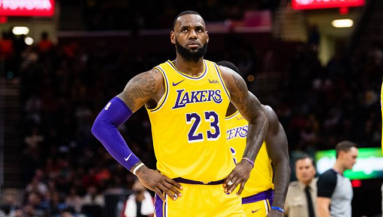

NBA：各球队需做好空场比赛的准备
原文链接 备份链接 图片来源：视觉中国 “ NBA已经提醒各球队需要准备应急预案——仅在必要人员在场的情况下进行比赛。 ” 虎扑篮球3月7日消息，据NBA记者Shams Charania报道，消息人士透露，联盟已经向各支球队发放了备忘录， …
湖人球星詹姆斯表示不愿进行空场比赛。（图片来源：Getty）
记者：李晓庄
“
如果空场计划确定实行，球队每场比赛将损失约200万美元的门票收入。
”
当地时间3月6日晚，联盟再次下发备忘录，要求各支球队做好包括“推迟比赛、进行空场（禁止观众入场）比赛”在内的多项准备。
此外，联盟还要求各支球队在周二之前制定计划，以降低同球员互动的人员数量。目前，各媒体的记者已经被限制进入球队更衣室。
鹈鹕教练Alvin Gentry对空场比赛的计划并不感到惊讶，并认为联盟应该对疫情持谨慎态度。
实际上，在NBA发放此份备忘录之前，已经有球队对观赛球迷进行了引导。
当地时间3月6日，旧金山公共卫生部门建议推迟或取消非必要大型集会，其中就包括篮球比赛。
当天，勇士队发布公告，呼吁身体不适和体质较弱的球迷不要前往现场观看比赛。在球场门口，勇士队张贴了疫情警示，以提醒观众病毒传播的风险。
然而，并非所有人都接受空场比赛的安排。
在随后几天的采访中，洛杉矶湖人队球星詹姆斯、凯尔特人球员肯巴·沃克等球员公开表示不愿进行空场比赛。
詹姆斯说:“（空场）是不可能的。如果没有球迷，我不会打球的，（球迷）是我打球的目的。”
除了球员，球队高层也提出反对意见。
休斯顿火箭队老板Tilman Fertitta称，自己甚至愿意停赛一到两个星期，也不愿意进行空场比赛。
同时，Fertitta指出，在3月5日的比赛中，疫情引发的担忧并没有对上座率产生任何负面影响。
根据联盟的官方数据，当晚比赛的18055张门票售罄，缺席人数甚至少于平日。正因此，Fertitta呼吁球迷保持冷静，不要盲目恐慌。
无独有偶，NHL佛罗里达美洲豹队的老板Viola对Fertitta表示支持，认为空场比赛将会影响球迷与职业体育比赛的互动。
此外，在Twitter等社交媒体上，空场比赛因为缺少互动性、季票持有者遭受损失等原因遭到批评。有球迷毫不留情，直言这种行为将会毁了比赛。
经济收益是阻碍空场计划推行的主要原因。
根据估算，如果空场计划确定实行，球队每场比赛将损失约200万美元的门票收入，这个数字还不包括饮品、食物、球队周边等潜在收益。
同时，观众的减少也会影响相关产业的效益。根据2011年的数据，在NBA停摆两周后，其球馆周边的饭店、旅店等服务业遭受了数亿美元的损失。
但如果情况不断恶化，空场或许是得以降低损失的唯一手段。
根据NBA此前的方案，若真有球员感染，其整支球队都将被隔离。甚至将造成整个联盟的停摆。
而对比门票收入，广告和电视网络转播才是盈利重头。价值不菲的转播合同、高昂的场馆租金，都无法让联盟放弃继续比赛的可能。
未经授权 禁止转载

原文链接 备份链接 图片来源：视觉中国 “ NBA已经提醒各球队需要准备应急预案——仅在必要人员在场的情况下进行比赛。 ” 虎扑篮球3月7日消息，据NBA记者Shams Charania报道，消息人士透露，联盟已经向各支球队发放了备忘录， …
原文链接 备份链接 体坛周报全媒体记者 王勤伯 经过一阵混乱和折腾，意甲未来几轮的安排算是有了一些眉目，到4月初，意甲应该都是在闭门状态举行。 闭门空场比赛在欧联杯国际米兰和卢多格雷茨的比赛中已经发生过。 防疫空场和平时联赛中的受罚空场完 …
原文链接 备份链接 据央视新闻，3日，就有关新冠肺炎疫情是否会导致今夏东京奥运会取消这一问题，日本奥运大臣桥本圣子公开表示，“协议要求奥运会在2020年内举行，这可以解释为允许推迟到年底举行。” 桥本圣子表示，根据相关协议，推迟或取消奥运 …
原文链接 备份链接 澎湃新闻记者 李思文 实习生 胡友美 张禹家给酒店内设备罩上防护膜，每天消毒两次。受访者供图 张禹家已经独守酒店24天了，每天一个人既当前台又当清洁员。天亮时，他目送医护人员急匆匆离开，到了深夜，又为疲惫的他们打开一扇 …
原文链接 备份链接 凤凰新闻客户端 凤凰网在人间工作室出品 2020年1月18日上午，天气像往常一样晴朗。在汉口中山公园西南角的一间健身房里，72岁的邱钧正向笔者描绘自己的规划——今年6月，他将前往南京参加“世界奥赛之夜”健美比赛，而 …